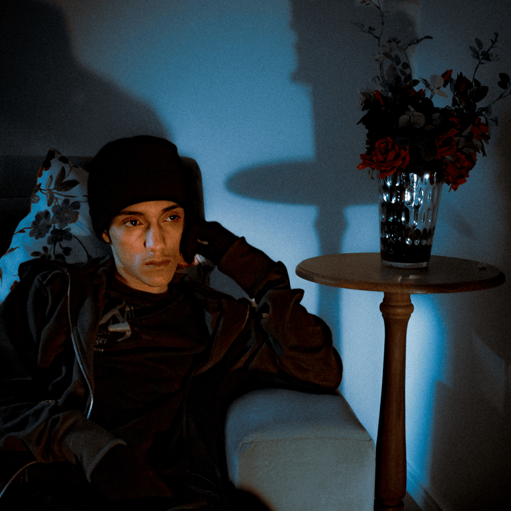

Big Rush (nome artístico de Gabriel Almeida Mota) é um rapper, cantor, produtor musical e performer brasileiro, nascido na Baixada Fluminense e criado em Irajá, no Rio de Janeiro. Conhecido por sua versatilidade, ele mistura trap, rap, plug, rage e faixas melódicas, alternando entre sons agressivos e introspectivos. Iniciou sua carreira nas batalhas de rap, ganhou destaque ao integrar o coletivo Young Fire Gang e consolidou seu nome com a faixa "C Walk". Entre seus trabalhos mais conhecidos estão Plugs da Nuvem (2022), RUSH & BLUES (2023), PERFORMANCES DE UM ROMANCE PORFÍRIO (2024) e DILEMA DO OURIÇO (2026).
